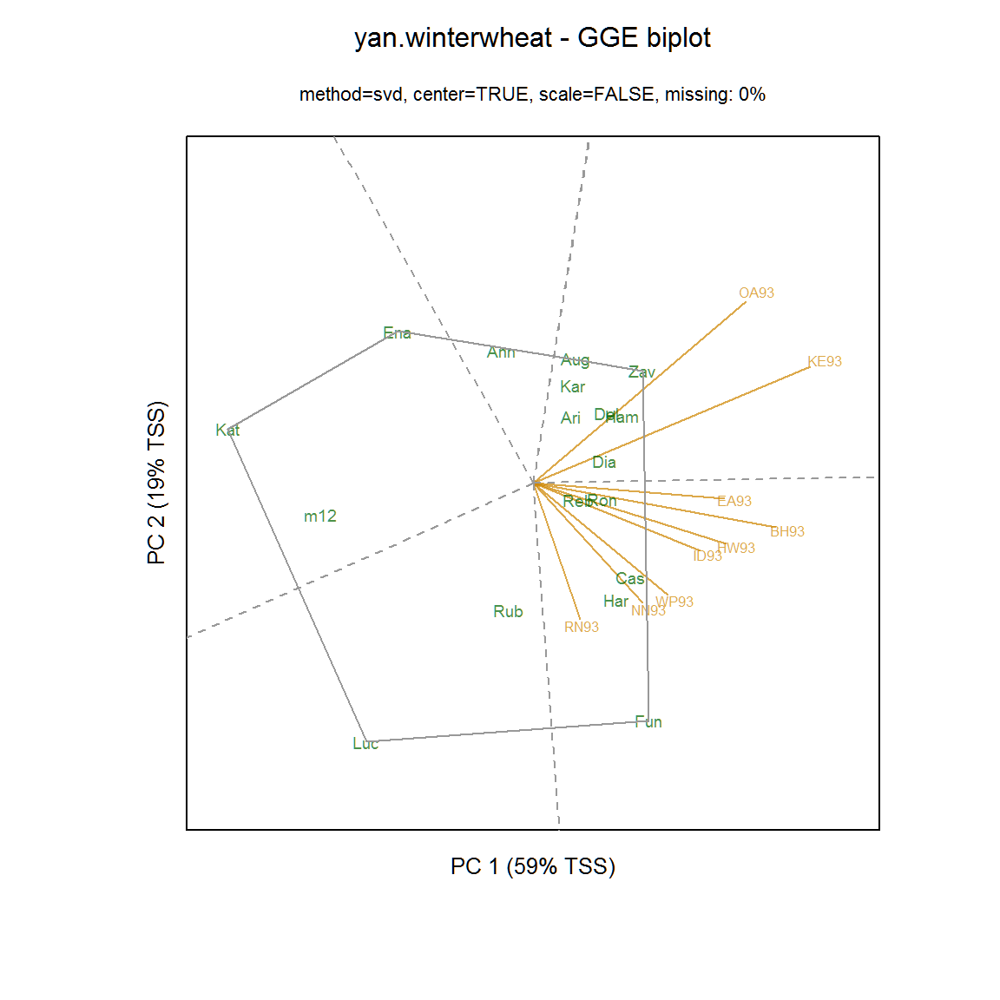
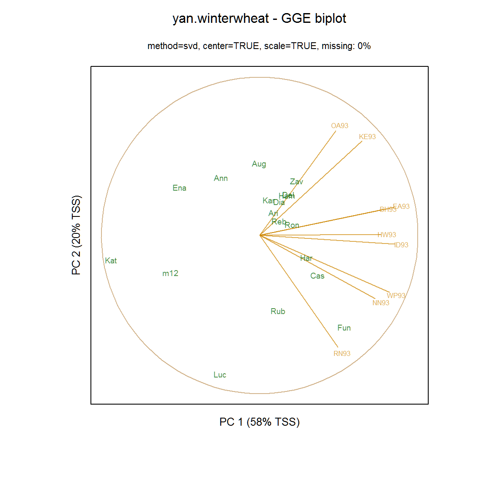
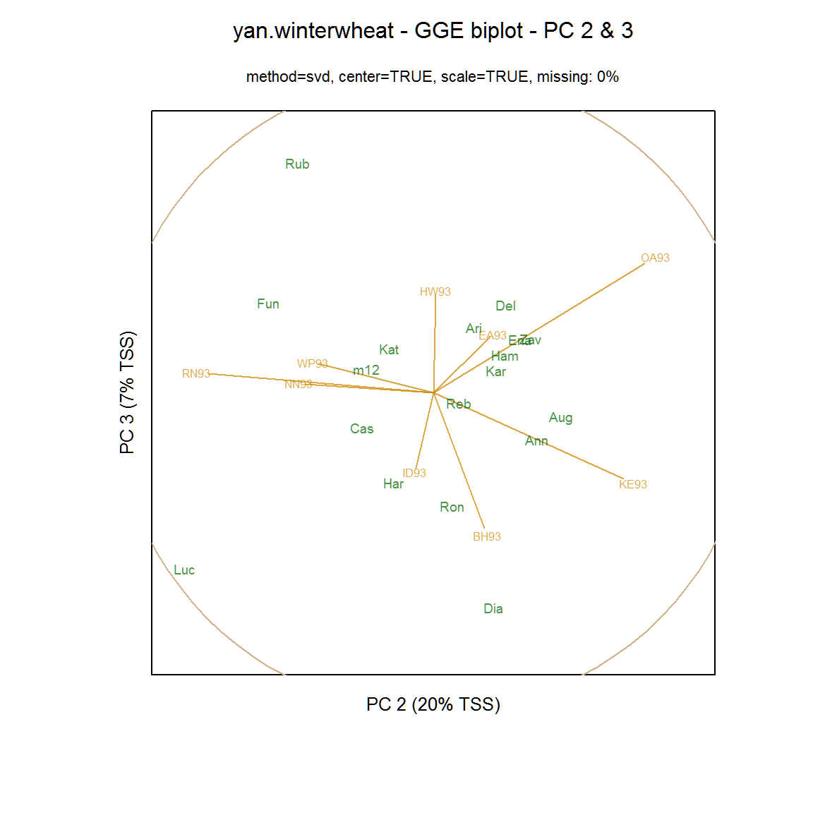
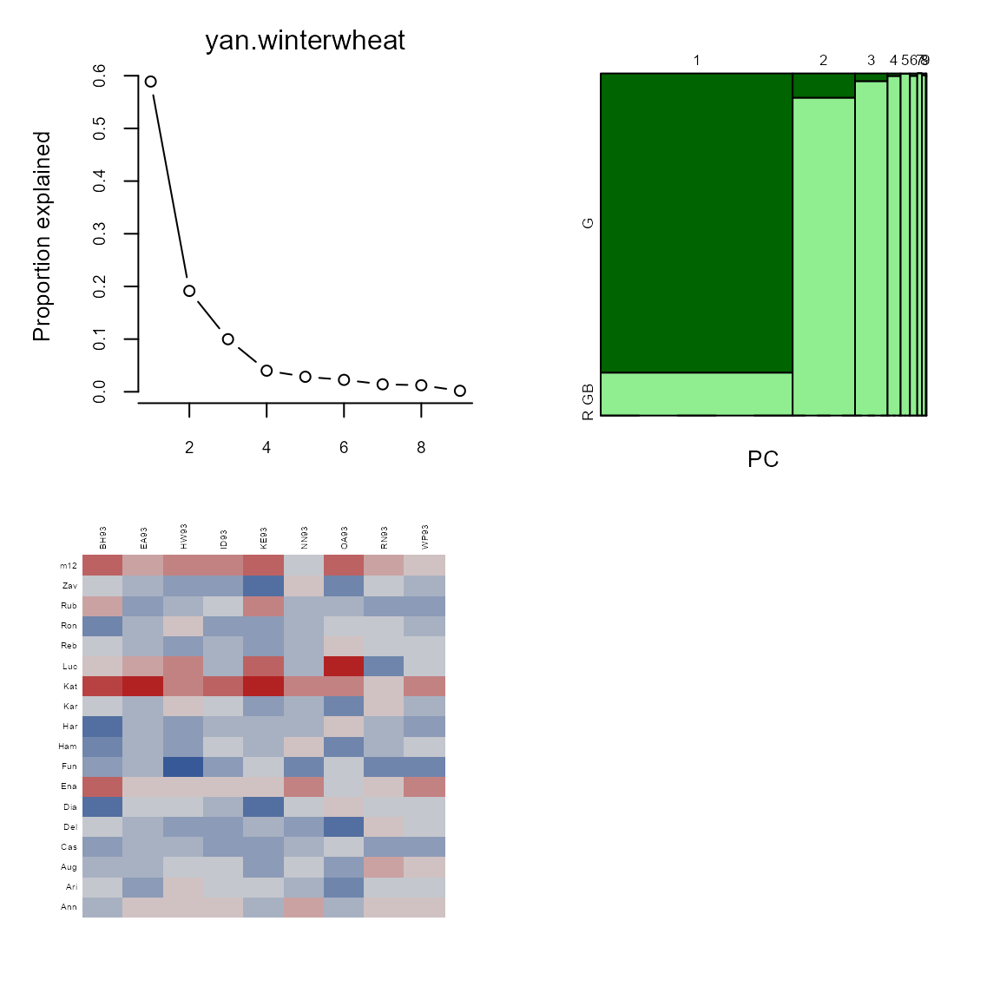
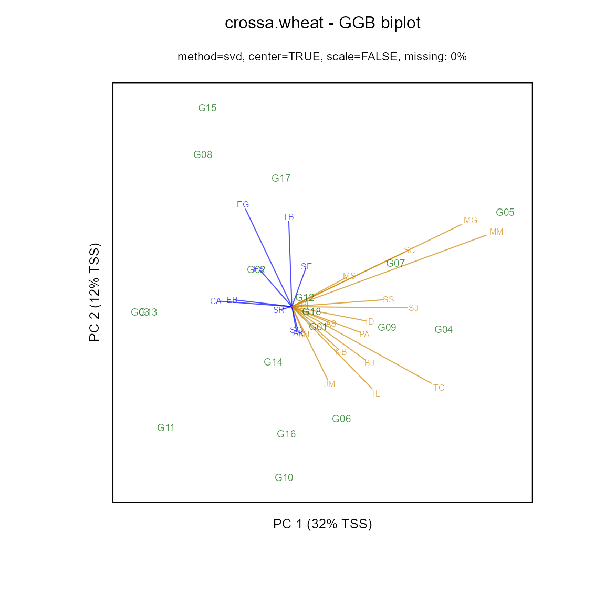

../../../../../x/rpack/gge/vignettes/gge_examples.Rmd
gge_examples.Rmdlibrary("knitr") knitr::opts_chunk$set(fig.align="center", fig.width=6, fig.height=6) options(width=90)
An example of a GGE (genotype plus genotype-by-environment) biplot similar to figure 12 of Yan and Tinker (2006). The flip argument can be used to flip the x and y axes so that biplots are oriented as desired. Because the SVD factorization is not unique,
library(agridat) data(yan.winterwheat) dat1 <- yan.winterwheat library(gge) m1 <- gge(dat1, yield~gen*env, scale=FALSE) biplot(m1, main="yan.winterwheat - GGE biplot", flip=c(1,0), origin=0, hull=TRUE)

Many people prefer to use ‘standardized’ biplots, in which the data for each environement has been centered and scaled. For standardized biplots, a unit circle is drawn. Environment vectors that reach out to the unit circle are perfectly represented in the two dimensional plane.
m2 <- gge(dat1, yield~gen*env, scale=TRUE) biplot(m2, main="yan.winterwheat - GGE biplot", flip=c(1,1), origin=0)
 As seen above, the environment vectors are fairly long, so that relative performance of genotypes in environments can be assessed with reasonable accuracy. In contrast, a biplot based on principal components 2 and 3 has shorter vectors which should not be interpreted.
Laffont, Hanafi, and Wright (2007) showed how to partition the sums-of-squares simultaneously along the principal component axes and along ‘G’ and ‘GxE’ axes.
plot(m1, main="yan.winterwheat")

The mosaic plot above shows that the first principal component axis is capturing almost all of the variation between genotypes, so that a projection of the genotype markers onto the first principal component axis is a good overall representation of the rankings of the genotypes.
Laffont, Wright, and Hanafi (2013) presented GGB (genotype plus genotype-by-block of environments) biplots, which are useful to enhance the view of mega-environments consisting of multiple locations.
library(agridat) data(crossa.wheat) dat2 <- crossa.wheat # Define mega-environment groups of locations dat2$eg <- ifelse(is.element(dat2$loc, c("KN","NB","PA","BJ","IL","TC", "JM","PI","AS","ID","SC","SS", "SJ","MS","MG","MM")), "Grp1", "Grp2") library(gge) # Specify env.group as column in data frame m3 <- gge(dat2, yield~gen*loc, env.group=eg, scale=FALSE) biplot(m3, main="crossa.wheat - GGB biplot")

When \(\bf X\) is a genotype-by-environment matrix, a genotype-focused biplot is easily obtained. The genotype coordinates are can be obtained from the SVD using the first two columns of \(\bf G_{gf} = U S\) or equivalently from NIPALS \(\bf G_{gf} = T\).
## u <- Xc.svd$u ## s <- diag(Xc.svd$d) ## v <- Xc.svd$v ## (u %*% s)[,1:2] ## t[,1:2]
The environment coordinates are the first two colunns of \(\bf E_{gf} = V\) (from the SVD) or \(\bf E_{gf} = P\) (from NIPALS).
## v[,1:2] ## p[,1:2]
For an environment-focused biplot, a little more effort is needed as the eigenvalues from NIPALS are also required. The square root of the NIPALS eigenvalues are the same as the SVD singular values.
The genotype coordinates are the first two columns of $_{ef} = U $ (from SVD) or \(\bf G_{ef} = T \Lambda^{-1/2}\) from NIPALS, where \(\bf \Lambda\) is a diagonal matrix of the eigenvalues.
## u[,1:2] ## sv <- sqrt(Xc.pca$eig) ## (t %*% diag(1/sv))[,1:2]
The environment coordinates are \(\bf E_{ef} = V\) (from SVD) or \(\bf E_{ef} = P \Lambda^{1/2}\) (from NIPALS):
## (v %*% s)[,1:2] ## (p %*% diag(sv))[,1:2]
Laffont, Jean-Louis, Mohamed Hanafi, and Kevin Wright. 2007. “Numerical and Graphical Measures to Facilitate the Interpretation of Gge Biplots.” Crop Science 47: 990–96. https://doi.org/10.2135/cropsci2006.08.0549.
Laffont, Jean-Louis, Kevin Wright, and Mohamed Hanafi. 2013. “Genotype Plus Genotype-by-Block of Environments Biplots.” Crop Science 53 (6): 2332–41. https://doi.org/10.2135/cropsci2013.03.0178.
Yan, Weikai, and Nicholas A Tinker. 2006. “Biplot Analysis of Multi-Environment Trial Data: Principles and Applications.” Canadian Journal of Plant Science 86: 623–45. https://doi.org/10.4141/P05-169.
Comments on biplots
Note that GGE biplots are environment-focused. In particular, this provides the interpretation that the correlation of genotype performance in two environments is approximated by the cosine of the angle between the vectors for those two environments.
The SVD and NIPALS methods provide the same principal components for complete-data, except that a principal component from SVD and the corresponding principal component from NIPALS might point in opposite directions (differ by a factor of \(-1\)) as in some of the examples above. The corresponding biplots would therefore be mirror-reversed along that component. For biplots from SVD and NIPALS that are visually consistent, each principal component can be directed to point in a direction that is positively correlated with the overall genotype means. In other words, if the correlation of the genotype means and the ordinate of the genotypes along the principal component is negative, the principal component is multiplied by \(-1\).
As with all biplots, the environment vectors can be arbitrarily scaled so that the genotypes and environments uses a similar amount of area on the plot. The algorithm that physically centers the biplot and scales it on the page is not perfect and has opportunities for improvement.